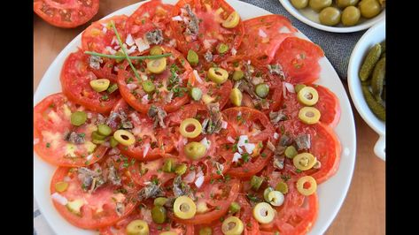

Recetas de comidas fáciles y rápidas de preparar en casa
 Inicio Tutoriales Recetas Guía local Historias de Rappi Corporativo Blogs de Rappi Blog de Rappi Colombia Blog de Rappi México Blog de Rappi Brasil Blog de Rappi Argentina Blog de Rappi Chile Blog de Rappi Uruguay Ir a Rappi > Inicio Tutoriales Recetas Guía local Historias de Rappi Corporativo Blogs de Rappi Blog de Rappi Colombia Blog de Rappi México Blog de Rappi Brasil Blog de Rappi Argentina Blog de Rappi Chile Blog de Rappi Uruguay Ir a Rappi >
Recetas de comidas saludables, fáciles y rápidas de preparar en casa
16/11/2018 In RecetasEn los últimos años han cambiado los hábitos alimenticios en América Latina, pues cada vez se trabaja más, se duerme menos y hay poco tiempo para comer. Quienes trabajan o tienen una vida demasiado agitada se ven obligados a inclinarse por la denominada comida rápida, tratando de ahorrar tiempo.
Una de las razones para preferir este tipo de comida no saludable es porque existe la creencia de que cocinar es difícil o toma demasiado tiempo, sin embargo, la mayoría de las personas coinciden en que la mejor comida es la hecha en casa.
Cocinar no es una tarea tan difícil si tienes a la mano recetas fáciles, rápidas y, sobre todo, ricas y saludables. Acá te dejamos 5 opciones de comida casera que podrás preparar tú mismo en menos de 30 minutos.
1 ¿Cómo hacer comidas fáciles y económicas para el almuerzo?
Con estas preparaciones podrás variar las comidas a la hora del almuerzo en tu casa, o podrás llevarlas en una tupperware a tu lugar de trabajo. Estas recetas saludables y fáciles te ayudarán a alimentarte bien sin invertir mucho tiempo en su preparación.
Pollo en salsa de queso
El pollo es una de las proteínas más saludables por su bajo contenido de grasa, utilizarlo en tus comidas servirá para mantener una dieta equilibrada y saludable. Para 4 porciones de esta receta necesitarás unos pocos ingredientes y solo 30 minutos para su cocción.
Ingredientes:
2 pechugas de pollo 1 cebolla 4 dientes de ajo 250 mililitros de crema de leche 200 gramos de queso curado (manchego, gouda) Aceite de oliva sal y pimienta Perejil picadoPreparación:
Comienza por cortar las pechugas en julianas y salpimienta al gusto. En una sartén con un poquito de aceite a fuego medio, sella el pollo por ambos lados y cocina por unos 3 minutos hasta que pierda el color rosado por fuera pero que aún esté crudo por dentro; retira del fuego y reserva.
En la misma sartén a fuego bajo, agrega un poco de aceite, la cebolla y el ajo picados y sofríe unos minutos hasta que la cebolla esté transparente, luego agrega la crema de leche y el queso mezclando para que se mezclen los ingredientes. Cuando el queso se esté comenzando a derretir, echa las pechugas y deja que se termine de cocinar por 5 minutos más. Acompaña tu pollo con unas verduras al vapor y unas tostadas de pan.
Ensalada fría de palmitos de cangrejo y arroz
Esta preparación te encantará, pues es sencilla, saludable y puedes variarla con otros ingredientes de tu gusto como maicitos, tocineta, tomate o jamón. Para una preparación de 4 porciones solo necesitarás lo siguiente:
Ingredientes:
400gramos de arroz largo 800 mililitros de agua 100 gramos de palmitos de cangrejo 50 gramos de alverjas o guisantes 1/2 pimentón rojo 1 zanahoria 100 gramos de aceitunas verdes sin hueso Aceite de oliva SalPreparación:
Comienza por preparar el arroz, para esto utiliza una olla y agrega el agua, el arroz y un poco de aceite y sal al gusto, deja cocinar por 15 minutos con tapa hasta que esté completamente seco. Mientras tanto, en otra olla agrega agua y un poco de sal para cocer las arvejas o guisantes por 10 minutos para que estén blandos, pero sin que se deshagan; escurre y deja enfriar.
Cuando el arroz y los guisantes estén fríos por completo, agrégalos en una ensaladera con el pimentón rojo cortado en julianas, las aceitunas cortadas por la mitad, la zanahoria rallada y los palmitos de cangrejos cortados en rodajas. Finaliza la preparación con un chorrito de aceite de oliva y pimienta negra molida para darle gusto.
Filete de res, fácil y rápido
Con esta deliciosa preparación podrás almorzar de forma ágil y saludable, pues su preparación no te quitará mucho tiempo y seguro quedarás satisfecho. Elije tu corte favorito de la carne de res y prepárate para hacer esta receta en casa:
ingredienetes:
2 medallones de carne de res 3 pimentones cortados y sin semillas ½ cebolla picada Sal y pimienta al gusto Aceite vegetalPreparación:
En una sartén, a fuego medio, calienta una cucharada de aceite y agrega la cebolla y el pimentón. Déjalos sofreír por 5 minutos o hasta que la cebolla esté transparente y los pimentones suaves; bájalos del fuego y resérvalos en un recipiente tapado para que conserven la temperatura.
Adoba los medallones de carne de res con un poco de aceite, sal y pimienta. Cocínalos a fuego medio en una sartén y déjalos dorar 8 minutos por cada lado o menos si deseas un término con menos cocción.
Sirve tus medallones en un plato y encima colócale los vegetales. Tu preparación está lista para degustar
Si te quedaste si carne de res para esta receta ¡No te preocupes! Pídela por Rappi a través de nuestra página web o nuestra App. En minutos te traeremos la carne más fresca para que tu plato quede delicioso.
2 Comidas fáciles para la noche
Después de la jornada laboral, no pases demasiado tiempo en la cocina. Con estas recetas podrás prepararte unas deliciosas cenas rápidas y saludables para que no te acuestes sin comer.
Pollo a la naranja al estilo asiático
Este plato con toques dulces y ácidos es muy sencillo de preparar y seguro te encantará. En menos de 30 minutos podrás tener un plato saludable y delicioso para la noche. Estos son los ingredientes que necesitarás para una cena de 4 personas.
Ingredientes:
4 pechugas de pollo 2 cebollas 4 naranjas 2 cucharadas de salsa de soya 2 dientes de ajo 2 de cucharadas de vinagre 1 cucharada de azúcar 2 cucharadas de maicena Sal y pimienta Aceite de olivaPreparación:
Exprime en un recipiente el jugo de las naranjas, agrégale la salsa de soya, los dientes de ajo finamente picados, la maicena, el azúcar, el vinagre, sal y pimienta negra molida al gusto. Vierte el pollo cortado en trozos y déjalo marinar por una hora.
Pasado el tiempo, utiliza una sartén a fuego medio con un poquito de aceite y agrega la cebolla picada finamente con un poco de sal y pimienta; deja cocinar por 5 minutos removiendo ocasionalmente hasta que la cebolla esté blanda. Sube el fuego y agrega el pollo para sellarlo por unos minutos hasta que pierdan el color rosado.
Finalmente baja el fuego, agrega la salsa y mezcla hasta que la salsa se vaya espesando y reduciendo. Espolvorea un poco de perejil sobre la preparación y sirve, podrás acompañar tu plato con una porción de arroz blanco que irá perfecto con el pollo a la naranja.
Ensalada de lentejas
Las lentejas son una legumbre rica en vitaminas, minerales y una buena cantidad de proteínas vegetales, lo que harán que esta ensalada sea una opción completa y saludable para la cena. SI deseas un poco más de proteína, podrás agregarle trozos de carne, pollo a la plancha o huevo cocido.
Ingredientes:
400 gramos de lentejas 1/2 pimentón verde 1/2 pimentón rojo 1 cebollín o cebolla de rama 1 zanahoria Aceite de olivaPreparación:
Comienza por cocer las lentejas, previamente lavadas, en un poco de agua con sal hasta que estén suaves; escúrrelas y reserva. En una ensaladera, agrega los pimentones cortados en julianas y sin semillas, el cebollín finamente picado, y la zanahoria rallada. Aliña la preparación con un poco de aceite de oliva y salpimienta al gusto.
Esta receta puedes utilizarla como plato principal, o como acompañante.
3 Comidas vegetarianas caseras saludables
Si prefieres la comida vegetariana, con estas recetas podrás preparar ricos platos fáciles y muy saludables. Estas preparaciones son, también, una buena forma de hacer que todos en casa, incluidos los niños coman verduras.
Albóndigas de calabacín
En este vegetal encontrarás buena cantidad de fibra, además de vitaminas y minerales que le ayudarán a tu cuerpo a tener un óptimo funcionamiento. Además, es bajo en calorías, así que esta comida será perfecta para aquellos que quieren alimentarse saludablemente y bajar de peso.
Ingredientes:
5 calabacines 2 huevos 2 dientes de ajo 1/2 cebolla 30 gramos de pan rallado Perejil picado 1/2 cucharadita de comino molido Harina AceitePreparación:
Ralla los calabacines sin pelarlos e introdúcelos en un trapo limpio o un filtro de café y aprieta para eliminar la mayor cantidad de agua posible. Colócala la ralladura en un bowl con el perejil, los dientes de ajo finamente picados, el comino, los huevos y el pan rallado; amasa con las manos hasta integrar todos los ingredientes y formar una masa homogénea.
Si ves que la masa está demasiado líquida, agrega un poco más de pan rallado para darle más consistencia. Forma las albóndigas y pásalas por un poco de harina, luego agrégala a freír en abundante aceite caliente hasta que la capa exterior esté dorada; retíralas y ponlas sobre un papel absorbente para eliminar el aceite sobrante.
Puedes acompañar tus albóndigas con una salsa de zanahorias o de tomates y acompañar con arroz blanco.
Lasaña de verduras
Esta preparación, además de ser baja en calorías, es apta para diabéticos porque no incluye salsa bechamel entre sus ingredientes. Así mismo, podrás variar las verduras de acuerdo a la cosecha o tu gusto.
Ingredientes para una lasaña de 2 personas:
1 calabacín 1 cebolla 3 dientes de ajo 200 gramos de champiñones 600 gramos de espinacas 8 láminas de pasta de lasaña 200 gramos de tomate frito 500 gramos de tomate triturado 150 gramos de queso bajo en grasas Sal pimienta y orégano Aceite de olivaElaboración:
Comienza por lavar y picar las verduras, luego, en una sartén a fuego bajo con un poquito de aceite agrega, en primer lugar, el calabacín, y cocinamos por 5 minutos. Pasado el tiempo agregamos la cebolla y dejamos cocer otros 5 minutos para finalmente agregar los champiñones y saltear por 5 minutos más.
En una sartén aparte, cocina un par de minutos las espinacas en abundante agua hirviendo con un poquito de sal. Retíralas del agua hirviendo y pásalas por agua a temperatura ambiente para parar la cocción y que se mantengan verdes. Alista la refractaria en la que vas a preparar la lasaña y coloca una base de tomates fritos, luego pon las láminas de pasta para cubrir toda la superficie, vierte las verduras, coloca una capa de espinacas, una de tomate triturado o pasta de tomate y finaliza con unas tajadas de queso bajo engrasa.
Repite el proceso las veces que sea necesario hasta llenar el molde por completo. A la última capa agrégale unas cucharadas de tomate frito y cubre con ralladura del queso bajo en grasas. Precalienta el horno a 180 grados centígrados y deja cocinar por 20 minutos; acompaña tu lasaña con unas deliciosas rodajas de pan francés tostado en el horno con un poco de mantequilla de ajo.
Farfalle en salsa rosa
La pasta en una de las bases más utilizadas en la preparación de alimentos pues aporta carbohidratos importantes en el cuerpo para generar energía. Esta receta de Farfalle en salsa rosa la puedes hacer vegetariana, o si deseas, agregar una porción de carne, pollo o pescado según tu gusto.
Ingredientes:
250 gramos de farfalle o pastas en forma de moñitos o corbatines 1 lata de puré de tomate o salsa pomodoro 3 cucharadas de crema de leche 1 rama de albahaca fresca Queso Parmesano rallado Sal y pimienta al gusto Aceite de OlivaPreparación:
Para la preparación de la pasta, utiliza una olla con agua hirviendo suficiente para tapar la pasta, agrégale una cucharadita de aceite y un poco de sal y déjala cocinar a fuego medio alto por unos 10 minutos aproximadamente. Mientras tanto, utiliza una sartén y un poco de aceite para sofreír el puré de tomate o la salsa pomodoro con un poco de albahaca fresca, la crema de leche, pimienta y sal al gusto.
Coloca en un plato la pasta y esparce sobre ella la salsa. Espolvorea queso parmesano sobre tu preparación y disfruta.
Si te faltó alguno de los ingredientes de esta preparación, en Rappi corremos por ti. Ingresa a nuestra página web o nuestra App y en la sección de Supermercado pide lo que te haga falta para completar tu receta. Te hacemos la vida más fácil.
4 Comidas fáciles para bajar de peso
A continuación te enseñamos varias recetas perfectas si estás de dieta y quieres adelgazar. Son
Pollo a la plancha con tomates cherry
El pollo es un alimento rico en proteínas, bajo en grasas y calorías, lo que la hace la carne ideal para cuidar la salud. Por esta razón, esta receta es perfecta para las personas que están cuidando su peso.
Puedes prepararla para cenar, pues te dará los nutrientes necesarios para la noche, pero será una comida liviana.
Ingredientes:
4 pechugas de pollo deshuesada sin piel 4 cucharadas de aceite vegetal 2 dientes de ajo picados 340 gramos de tomate cherry partidos por la mitad 1/3 taza de aceituna Kalamata en rodajas 2 cucharadas de agua Queso feta (opcional) Sal y pimienta al gustoInstrucciones:
Comienza por untarle un poco de aceite a las pechugas de pollo y salpimentar al gusto para darle más sabor. Calienta una sartén a fuego medio y cocina el pollo de 6 a 8 minutos por cada lado o hasta que esté dorada, luego bájalas del fuego y déjalas a un lado con una tapa para que no se enfríen.
En el mismo sartén, a fuego medio, agrega un poco de aceite y sofríe el ajo finamente picado, después agrega los tomates cherry, las aceitunas y las 2 cucharadas de agua. Cocina por 2 o 3 tres minutos y baja del fuego. ¡Tu preparación está lista! Sirve tus pechugas en un plato y agrega la mezcla sobre ellas. Desmenuza el queso feta y, si deseas, puedes decorarlo con unas hojitas de albahaca fresca.
¿Te falta algún ingrediente para este plato? En Rappi corremos por ti para que no se te enfríe la preparación. Pide lo que necesites a través de nuestra página web o nuestra App y en minutos te lo llevaremos.
Ensalada verde de rugula y champiñones
Incluir vegetales en tus preparaciones es imprescindible para una alimentación balanceada y saludable. Esta ensalada verde de rúgula y champiñones la podrás utilizar para acompañar tus comidas o como plato completo si le agregas una proteína de tu elección como pollo, carne o atún.
Ingredientes:
200 gramos de rúgula lavada y desinfectada 150 gramos Champiñones lavados y fileteados Un poco de aceite de oliva Un poco de vinagre de frutas Sal y pimienta al gusto ½ taza de queso parmesanoPreparación:
Comienza por sofreír en una sartén con un poco de mantequilla los champiñones, luego, en un tazón mézclalos con la rúgula, y el queso parmesano. Finaliza salpimentando y agregando el aceite y el vinagre al gusto.
5 Comidas saludables y ricas para niños
Estas sencillas pero deliciosas preparaciones son ideales para los niños, además quedarán perfectas para ofrecer en los cumpleaños y las fiestas infantiles pues son ingredientes que a todos les encantan. Estas propuestas son fáciles de hacer y sobre todo muy económicas.
Sánduche apanado
Cambia el tradicional y aburrido sánduche por esta preparación divertida que, con una corteza crocante y un centro suave, fascinará a los más pequeños. Para preparar 2 porciones necesitará lo siguiente:
Ingredientes:
4 rebanadas de pan 8 tajadas de jamón cocido 8 tajadas de queso emmenthal Dos huevos Pan rallado Aceite para freírPreparación:
Sobre una de las rebanadas de pan, coloca una tajada jamón, luego 2 tajadas de queso, luego una nueva tajada de jamón y finaliza con una rodaja más de pan. En un bowl, bate el huevo y pasa el sánduche por él, humedeciéndolo bien y luego por el pan rallado para empanizar.
En una olla con suficiente aceite caliente para tapar al menos la mitad del sánduche, introduce la preparación y déjalo freír 2 minutos hasta que esté dorado, luego dale la vuelta y repite el proceso. Retira del aceite y colócalo sobre un papel absorbente para retirar el exceso de grasa.
Flautas caseras de jamón y queso
En solo 15 minutos y 4 ingredientes, podrás hacer esta receta que te servirá para el desayuno o la cena de los niños. Es una preparación fácil, saludable y, sobre todo, muy económica.
Ingredientes para 4 personas:
8 tortillas mexicanas 8 tajadas de jamón cocido 16 tajadas de queso mozzarella Salsa de miel mostazaPreparación:
Sobre la tortilla mexicana, coloca las tajadas de jamón para hacer capa que la cubra por compelo, luego, haz dos veces lo mismo con el queso, espárcele un poco de miel mostza y enrolla apretando un poco para que quede el envuelto quede firme. Precalienta el horno a 200 grados centígrados y lleva las flautas a calentar sobre una bandeja con papel parafinado para que no se peguen.
Espera a que las tortillas tomen un poco de color y que el queso se derrita. Retira y sirve inmediatamente.
6 Preparaciones fáciles y económicas para fiestas y cumpleaños
Si tienes una reunión de amigos o familiares en casa, estas recetas te servirán para atender a los invitados antes del plato principal. Son fáciles de preparar y muy económicas, pues solo necesitarás unos pocos ingredientes para sorprender a todos.
Bolitas de mozzarella y arroz
Ingredientes:
200 gramos de arroz 400 mililitros de agua 2 dientes de ajo 50 gramos de mozzarella rallada 50 gramos de mozzarella en cubos 1 cucharadita de orégano Pan rallado 1 huevo Sal y pimienta AceitePreparación:
Comienza por prear el arroz el arroz de forma tradicional, o si tienes preparado de alguna comida anterior, también podrás utilizarlo. Para esto, coloca en una olla a fuego medio el arroz y el agua con una poquito de aceite, sal al gusto y mezcla; déjalo cocinar con tapa durante 15 minutos hasta que se haya absorbido toda el agua.
Cuando el arroz esté frío, agrégale un poco de pimienta negra molida, el orégano seco y el queso mozzarella rallado y revuelve bien para que se integren los ingredientes. Con las manos limpias, toma una porción de la mezcla, aplástala un poco y agrega en el centro un cubo de queso mozzarella; agarra un poco más de la masa, colócala encima y dale la forma de bola, asegurándote de apretarla lo suficiente para que no se deshaga luego.
Ahora empaniza las bolitas, para esto, pásalas por harina, luego por el huevo batido y finalmente por el pan rallado y llévalas a congelar por 30 minutos. Retíralas e inmediatamente, échalas a freír en abundante aceite caliente hasta que estén doradas; sácalas con un utensilio de cocina y déjalas secar sobre un papel absorbente para retirar el exceso de grasa.
Tus bolitas de mozzarella y arroz estarán listas para servir, puedes acompañarlas con una salsa o mermelada dulce.
Rebozados de calabacín con jamón y queso
Este tentempié es perfecto para cualquier ocasión pues sus ingredientes son económicos y quedan muy bien en todas las preparaciones. Toma nota de los que necesitas para hacerlos en casa.
Ingredientes:
1 calabacín grande 100 gramos de jamón en tajadas 100 gramos de queso mozzarella en tajadas Harina Huevo Sal Aceite para freírPreparación:
Con la ayuda del pelador de papas o una mandolina, saca tajadas muy finas a lo largo del calabacín procurando que no se rompan. Toma cada lámina y pon sobre ella jamón y queso, asegurándote de que todos los ingredientes estén cortados del mismo ancho y ninguno sobresalga en los bordes; enrolla cada uno y reserva.
En un bowl bate el huevo, y en un plato agrega harina abundante, luego pasa cada rollito, primero por la harina y luego por el huevo. En una olla, agrega aceite suficiente para que cubra los envueltos y caliéntalo a alta temperatura para poder hacer un buen rebozado; fríe cada envuelto por 2 minutos, retira de la olla y coloca sobre un papel absorbente.
Utiliza una salsa de maracuyá o uchuvas para acompañar estos deliciosos rebozados de calabacín con queso y jamón.
Ensalada de atún
Si debes atender una fiesta, la ensalada de atún será el plato ideal. Es una preparación económica, rica, saludable y muy fácil de preparar en casa. Toma nota de lo que necesitarás:
Ingredientes:
3 latas de atún en agua 5 hojas de lechuga corta de tiras 3 tomates picados El zumo de medio limón 3 cucharadas de mayonesa 4 champiñones cortados ¼ de Cebolla picada ½ aguacate Galletas saladas Sal y pimienta al gustoPreparación:
En un tazón, agrega el atún si el agua y adiciónale los tomates cortados en rodajas o cubitos según tu gusto, la lechuga y la cebolla y mezcla bien. En una sartén con un poco de aceite, sofríe los champiñones y agrégalos a la preparación.
A la mezcla agrégale mayonesa y limón al gusto y sazona con sal y pimienta, luego sirve en una ensaladera y coloca el aguacate cortado en láminas para decorar. Acompaña tu ensalada con galletas saladas, a tus invitados les va a encantar.
Si a todos le encantó esta receta y se te acabaron las galletas, pídelas por Rappi. Corremos por ti.
Pide los ingredientes por Rappi
No tienes excusa para seguir preparando comidas aburridas, y si te falta algún ingrediente en Rappi corremos por ti y en minutos te los llevamos hasta la puerta de tu casa. Ingresa a nuestra página web o la App y en la sección de Supermercado, pide todo lo que te haga falta para preparar estas recetas.
Si buscas más ideas para variar el menú en tu casa, visita este artículo y aprende nuevas recetas de desayunos saludables y nutritivos para niños según su edad
Related Posts
La obsesión por los Unicornios llevada a la mesa
22/04/2017
Lasaña: Miércoles con Samy
21/02/2017
Snacks navideños. Unas recetas facilísimas para tus novenas que encantarán a tus invitados
13/12/2016
Los Mejores Cocteles de Cocktail Week
18/05/2017
¡Paletas de Brownie con Nuez para enamorar en San Valentin!
02/02/2017
Deliciosa receta de arroz con leche y coco casero
08/01/2019
© Blog de Rappi, 2021